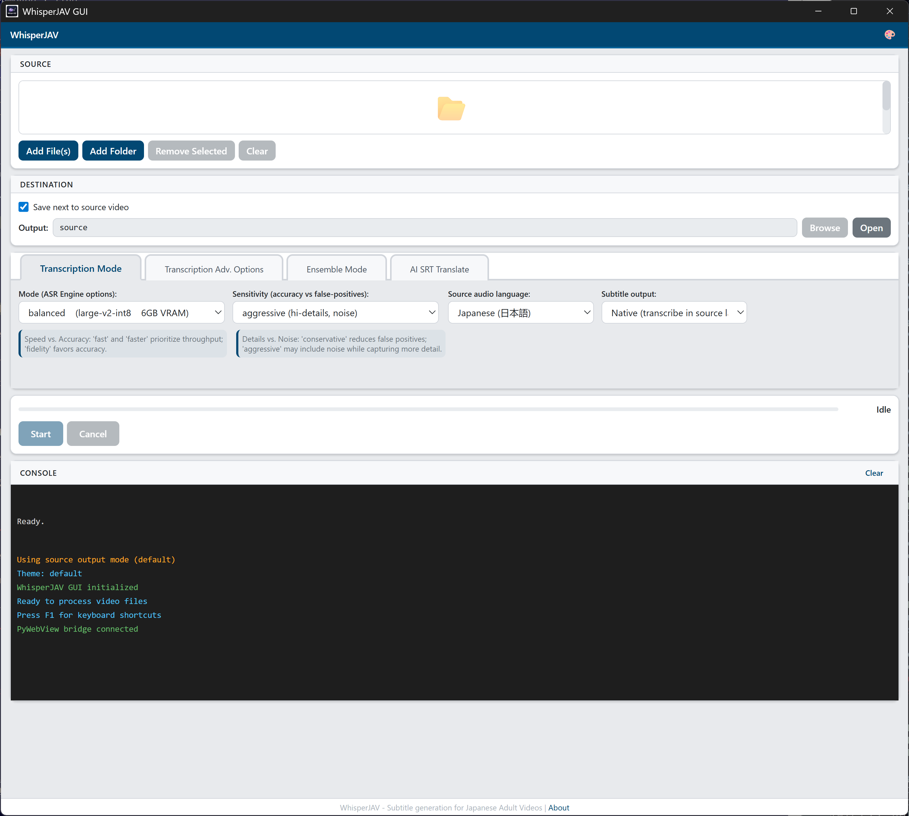
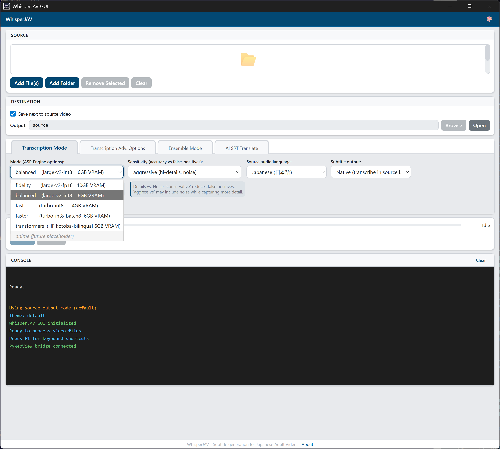
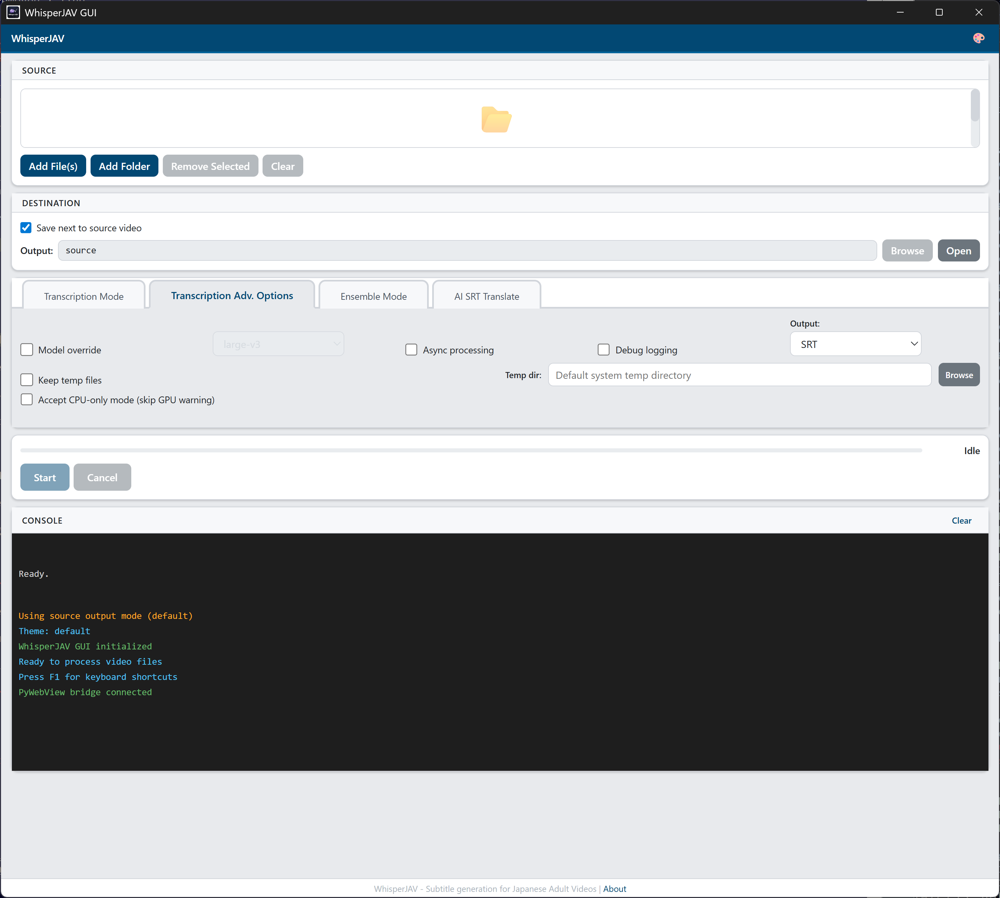
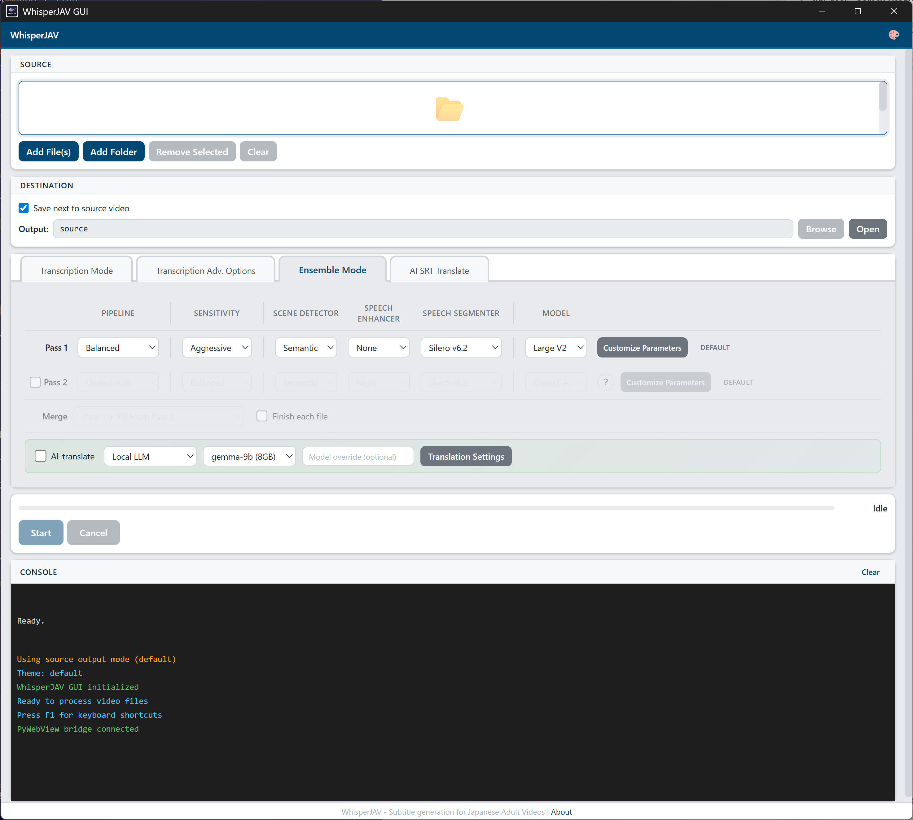
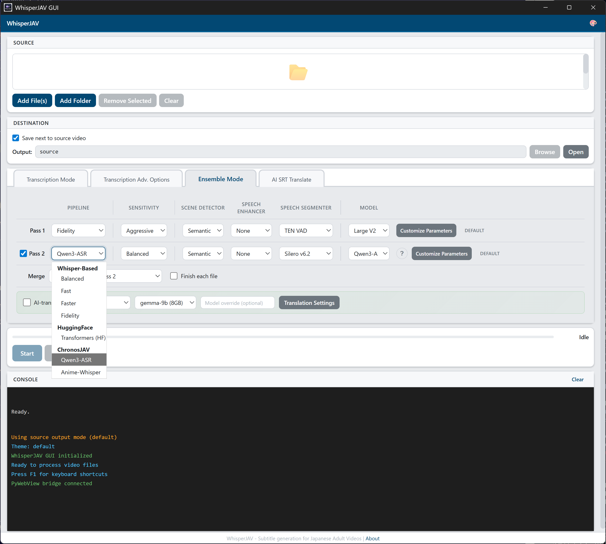
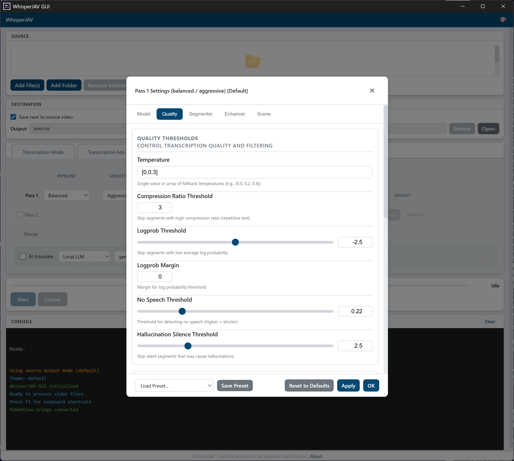
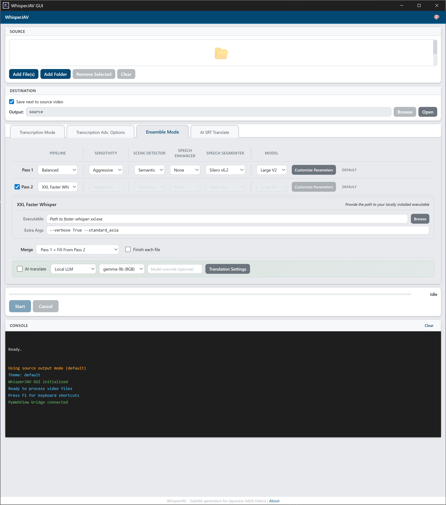
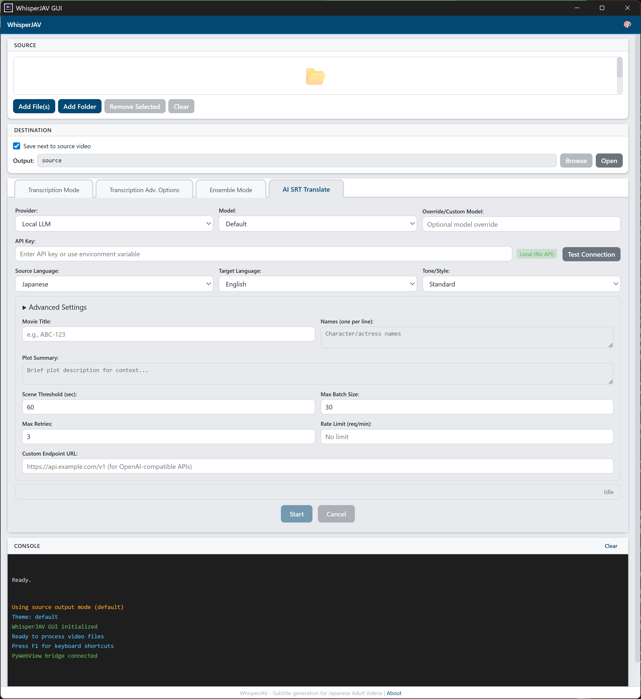
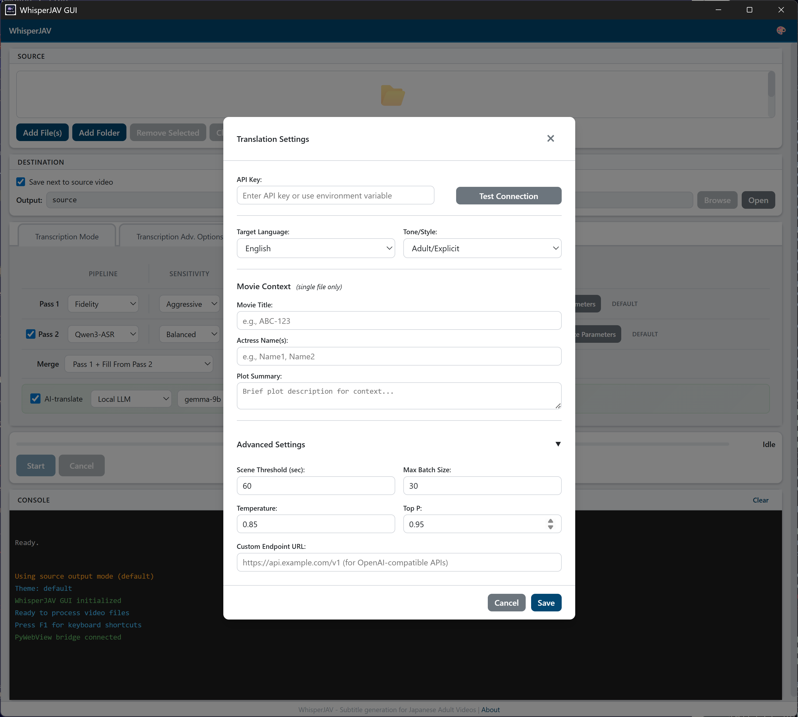

WhisperJAV GUI 用户指南¶
截图来自 v1.8.9 · Windows 11
目录¶

1. 启动应用¶
安装完成后，可以通过以下方式启动 WhisperJAV：
- 桌面快捷方式 — 由安装程序自动创建
- 开始菜单 — 搜索 "WhisperJAV"
- 命令行 —
whisperjav-gui
首次启动时，应用会执行预检查，验证 FFmpeg、CUDA 和 Python 依赖项是否可用。任何问题都会在窗口底部的控制台中报告。
2. 界面概览¶
GUI 从上到下分为五个区域：
| 区域 | 用途 |
|---|---|
| 顶部栏 | 主题切换器（4 种主题）和检查更新按钮 |
| 来源 | 添加要处理的视频/音频文件 |
| 目标 | 设置输出 SRT 文件的保存位置 |
| 选项标签页 | 四个配置标签页（参见第 5-8 节） |
| 运行控制和控制台 | 进度条、开始/取消按钮和实时日志输出 |
主题¶
点击顶部栏中的调色板图标切换主题：
| 主题 | 描述 |
|---|---|
| Default | 蓝色调的浅色主题 |
| Material Design 风格 | |
| Carbon | IBM Carbon 深色主题 |
| Primer | GitHub 风格的中性色调 |
3. 添加文件¶
WhisperJAV 接受 FFmpeg 支持的任何格式的视频和音频文件（MP4、MKV、AVI、WAV、MP3、FLAC、M4B 等）。
添加文件¶
- 拖放 文件到文件列表区域
- Add File(s) 按钮 — 打开多选文件对话框
- Add Folder 按钮 — 添加文件夹中的所有媒体文件（非递归）
每个文件在列表中显示文件名和时长。
管理文件列表¶
- Remove Selected — 从列表中移除选中的文件
- Clear — 移除所有文件
4. 选择输出位置¶
默认情况下，SRT 文件保存在源视频旁边。取消勾选 "Save next to source video" 可以选择自定义输出文件夹。
| 设置 | 行为 |
|---|---|
| 勾选（默认） | 输出 SRT 保存在每个源视频所在的文件夹中 |
| 取消勾选 | 所有 SRT 文件保存到指定的输出目录 |
取消勾选后，使用 Browse 选择文件夹，或使用 Open 在文件资源管理器中查看。
5. 基本转录¶
Transcription Mode 标签页（标签页 1）控制核心转录处理管线。
模式¶
选择处理管线。每种模式在速度和精度之间做出不同的权衡。

| 模式 | 后端 | 场景检测 | 语音活动检测 | 适用场景 |
|---|---|---|---|---|
| Fidelity | Whisper | 是 | 完整 | 最高精度，速度较慢 |
| Balanced（默认） | Whisper | 是 | 是 | 通用场景 |
| Fast | Whisper | 是 | 否 | 具有场景感知的快速转录 |
| Faster | Faster-Whisper | 否 | 否 | 最快速度，最少处理 |
| Transformers | HuggingFace | 是 | 是 | 替代后端 |
灵敏度¶
控制系统检测和分割语音的激进程度。
| 灵敏度 | 描述 |
|---|---|
| 激进（默认） | 较低阈值，捕获更多语音（包括安静段落） |
| 均衡 | 居中水平 |
| 保守 | 较高阈值，误报更少，可能遗漏安静的语音 |
源语言¶
视频中的说话语言。影响 Whisper 的语言提示和后处理规则。
- 日语（默认） — 针对日语优化，包含日语分组、助词检测、相槌处理
- 韩语、中文、英语 — 标准 Whisper 处理
字幕输出¶
- 原语言（默认） — 以原始语言输出字幕
- 直接转英语 — Whisper 在转录过程中翻译为英语（质量低于专门的翻译工具）
6. 高级选项¶
Advanced 标签页（标签页 2）提供用于故障排除和微调的额外控制。

| 选项 | 默认值 | 描述 |
|---|---|---|
| 模型覆盖 | 关闭 | 勾选后，强制使用指定的 Whisper 模型大小，而非处理管线默认值 |
| 模型 下拉 | Large V3 | 仅在勾选模型覆盖时可见。选项：Large V2、Large V3、Turbo |
| 输出格式 | SRT | 输出格式：SRT、VTT 或两者 |
| 异步处理 | 关闭 | 启用异步处理管线执行 |
| 调试日志 | 关闭 | 将详细调试日志写入 whisperjav.log |
| 保留临时文件 | 关闭 | 保留中间音频块和处理产物 |
| 自定义临时目录 | 系统默认 | 开启"保留临时文件"后，可选择存储位置 |
| 接受纯 CPU 模式 | 关闭 | 允许在没有 CUDA GPU 的情况下运行（速度慢很多，但可以工作） |
7. 集成模式（双通道）¶
Ensemble 标签页（标签页 3）允许运行两个不同的处理管线并合并结果，以获得更高的精度。这是最强大的模式。

集成模式的工作原理¶
- 第一通道 使用一种处理管线配置处理视频
- 第二通道（可选）使用另一种配置处理同一视频
- 两个 SRT 输出通过可配置的策略进行合并
这种方式利用了不同后端的优势 — 例如，Whisper 用于时间轴精度，Qwen3-ASR 用于文本质量。
通道配置¶
始终处于活动状态。每个通道具有相同的控制项：
| 控制项 | 选项 | 默认值 |
|---|---|---|
| 处理管线 | Balanced、Fast、Faster、Fidelity、Transformers、Qwen3-ASR、ChronosJAV、XXL Faster Whisper | Balanced |
| 灵敏度 | 激进、均衡、保守 | 激进 |
| 场景检测器 | Auditok、Silero、Semantic、None | Semantic |
| 语音增强器 | None、FFmpeg DSP、ZipEnhancer、ClearVoice、BS-RoFormer | None |
| 语音分割器 | Silero v6.2、v4.0、v3.1、Whisper VAD、TEN、None | Silero v6.2 |
| 模型 | 取决于处理管线 — Large V2/V3/Turbo (Whisper) 或 1.7B/0.6B (Qwen) | 处理管线默认值 |
可用处理管线¶
处理管线下拉菜单按后端分组：

- 基于 Whisper：Balanced、Fast、Faster、Fidelity
- HuggingFace：Transformers
- ChronosJAV：Qwen3-ASR、Anime-Whisper
- 外部 (BYOP)：XXL Faster Whisper（仅第二通道）
自定义参数¶
点击某个通道上的 Customize 按钮打开参数调整弹窗。可以对模型、质量、语音分割器、语音增强器、场景检测和上下文参数进行精细控制。

弹窗包含 Model、Quality、Segmenter、Enhancer 和 Scene 设置标签页。徽标显示 DEFAULT 或 CUSTOM 表示参数是否已修改。
使用 Save Preset 保存配置以便重用，或使用 Load Preset 恢复已保存的配置。预设在会话间持久保存。
第二通道配置¶
勾选 Pass 2 复选框启用第二通道。控制项与第一通道相同。
禁用时，该行变灰且所有控制项不可用。
BYOP：XXL Faster Whisper (v1.8.9+)¶
选择 XXL Faster Whisper 作为第二通道处理管线，以使用 PurfView 的 Faster Whisper XXL 作为外部子进程。这是"自带处理管线"（BYOP）功能 — 你提供可执行文件，WhisperJAV 负责集成。

| 字段 | 描述 |
|---|---|
| Executable | faster-whisper-xxl.exe 的路径。点击 Browse 选择。 |
| Extra Args | 传递给 XXL 的额外参数（例如 --verbose True --standard_asia）。 |
WhisperJAV 仅向 XXL 发送 4 个必需参数（输入文件、输出目录、模型、语言）。其他一切由 Extra Args 字段控制。XXL 的实时控制台输出会流式传输到 GUI 控制台。
如果 XXL 在关闭时崩溃（这是已知的 ctranslate2 行为），但 SRT 已经写入，WhisperJAV 会保留有效输出而不是丢弃它。
语音增强：FFmpeg DSP¶
选择 FFmpeg DSP 作为语音增强器时，会出现一个包含 8 种音频处理效果的附加面板：
| 效果 | 描述 |
|---|---|
| 响度归一化 | 将整体响度归一化到标准水平 |
| 动态归一化 | 平衡安静和响亮段落之间的音量差异 |
| 压缩 | 减小动态范围 |
| 降噪 | 去除背景噪音 |
| 高通滤波器 | 去除低频隆隆声 |
| 低通滤波器 | 去除高频嘶嘶声 |
| 消齿音 | 减少刺耳的齿擦音（s/t 音） |
| 增益 | 提升整体音量 |
合并策略¶
启用第二通道后，选择两个输出的合并方式：
| 策略 | 描述 |
|---|---|
| Pass 1 Primary（默认） | 以第一通道为基础，用第二通道填补空缺 |
| Smart Merge | 基于质量启发式算法智能选择每个通道的最佳字幕 |
| Full Merge | 合并两个通道的所有字幕，解决重叠问题 |
| Longest | 当通道重叠时，选择较长（更详细）的字幕 |
| Pass 2 Primary | 以第二通道为基础，用第一通道填补空缺 |
| Pass 1 Overlap (30%) | 以第一通道为基础，需要 30% 的时间重叠才从第二通道合并 |
| Pass 2 Overlap (30%) | 以第二通道为基础，需要 30% 的时间重叠才从第一通道合并 |
串行模式¶
勾选 "Finish each file" 以在处理多个文件时，先完整处理每个文件（第一通道 → 第二通道 → 合并），再处理下一个。这样可以在结果出来时立即查看，而不必等待整个批次完成。
内联 AI 翻译（集成模式）¶
勾选合并策略后面的 "AI-translate" 以自动翻译合并后的输出。这会显示一个内联的提供商/模型选择器和设置按钮。
8. AI 字幕翻译¶
AI SRT Translate 标签页（标签页 4）是一个独立工具，用于使用 AI 语言模型翻译现有的 SRT 文件。

提供商和模型¶
| 提供商 | 说明 |
|---|---|
| Ollama | 通过 Ollama 使用本地大语言模型。免费、隐私、无需 API 密钥。推荐优先于 Local。 |
| Local | 使用本地大语言模型服务器 (llama-cpp)。免费、隐私。旧版 — 建议改用 Ollama。 |
| DeepSeek | 云端 API。性价比高，CJK 语言质量好。 |
| Gemini | Google 的 API。多语言支持好。 |
| Claude | Anthropic 的 API。高质量，成本较高。 |
| GPT | OpenAI 的 API。广泛可用。 |
| OpenRouter | 支持多种模型的元路由器。 |
| GLM | 智谱 AI。适合中文相关任务。 |
| Groq | 快速推理云提供商。 |
| Custom | 任何 OpenAI 兼容的端点。 |
每个提供商会填充一个 模型 下拉菜单，列出可用模型。使用 Custom model override 指定不在列表中的模型 ID。
API 密钥和连接测试¶
对于云提供商，输入你的 API 密钥并点击 Test Connection 验证是否有效。状态图标显示结果。
- 绿色勾号：连接成功
- 红色叉号：连接失败（检查密钥和端点）
Local 提供商不需要 API 密钥 — 它会自动启动 llama-cpp 服务器。
语言和风格¶
| 设置 | 选项 | 默认值 |
|---|---|---|
| 源语言 | 日语、韩语、中文 | 日语 |
| 目标语言 | 英语、中文、印尼语、葡萄牙语、西班牙语 | 英语 |
| 风格 | Standard、Adult-Explicit | Standard |
Standard 风格生成干净、自然的翻译。Adult-Explicit 使用针对 JAV 对白的专门指令和相应词汇。
高级设置¶
点击可折叠的 Advanced Settings 部分展开更多选项：
| 设置 | 默认值 | 描述 |
|---|---|---|
| 影片标题 | （空） | 为 AI 提供上下文以改善翻译 |
| 演员姓名 | （空） | 帮助 AI 正确处理角色名称 |
| 剧情摘要 | （空） | 为 AI 翻译器提供额外上下文 |
| 场景阈值 | 60 秒 | 翻译器将字幕分组为场景进行批处理的时间间隔 |
| 最大批量大小 | 30 | 每次翻译批处理的最大字幕数 |
| 最大重试次数 | 3 | API 调用失败的重试次数 |
| 速率限制 | （提供商默认值） | 每分钟请求数限制 |
| 自定义端点 | （空） | 覆盖默认 API 端点 URL |
翻译进度¶
翻译有自己的进度条和开始/取消按钮，位于标签页 4 的底部。标签页 4 处于活动状态时，主运行控制区域会隐藏。
9. 运行任务¶
开始¶
- 添加一个或多个文件（第 3 节）
- 在相应标签页上配置选项
- 点击 Start
进度条显示整体完成百分比。状态标签描述当前阶段（例如"正在提取音频..."、"正在转录场景 3/12..."）。
取消¶
点击 Cancel 停止当前任务。进程终止，已有的部分输出会被保留。
处理运行时¶
- 所有文件选择和配置控制项被禁用
- Cancel 按钮变为可用
- 进度条和控制台显示实时进度
完成¶
完成后，状态显示"Completed"，SRT 文件路径打印在控制台中。输出的 SRT 可以直接在任何媒体播放器中使用。
10. 控制台输出¶
底部的控制台显示来自处理管线的实时日志消息。
| 颜色 | 含义 |
|---|---|
| 绿色 | 成功消息（文件已保存、处理完成） |
| 黄色 | 警告（已激活后备方案、参数已调整） |
| 红色 | 错误（文件未找到、CUDA 故障） |
| 白色/灰色 | 信息消息（进度、阶段切换） |
点击 Clear 清空控制台输出。
11. 菜单与对话框¶
关于对话框¶
按 F1 或通过顶部栏访问。显示版本信息、功能列表和键盘快捷键。
检查更新¶
WhisperJAV 在启动时自动检查更新（延迟 3 秒后）。有新版本可用时，顶部栏会出现一个显示版本号的微妙提示。点击可查看更新日志。
对于关键更新，窗口顶部会出现一个完整的横幅。
也可以手动检查：点击顶部栏中的调色板图标，然后选择 Check for Updates。
翻译设置弹窗¶
可从 Ensemble 标签页 AI 翻译行中的 Translation Settings 按钮访问。以紧凑的弹窗形式提供与标签页 4 相同的配置。

12. 键盘快捷键¶
| 快捷键 | 操作 |
|---|---|
| Ctrl+O | 打开文件对话框（添加文件） |
| Ctrl+R | 开始处理 |
| Escape | 取消当前任务 / 关闭对话框 |
| F1 | 打开关于对话框 |
| 方向键 | 浏览文件列表 |
13. 常见工作流程¶
快速转录（最快）¶
- 将视频文件拖放到应用中
- 保持默认设置（Balanced 模式、激进灵敏度、日语）
- 点击 Start
- SRT 文件出现在视频文件旁边
高质量转录（集成模式）¶
- 添加文件
- 进入 Ensemble 标签页
- 第一通道：Balanced 处理管线、Semantic 场景检测（默认）
- 启用第二通道：选择 Qwen3-ASR 处理管线
- 合并策略：Smart Merge
- 点击 Start
- 两个通道依次运行，然后合并结果
一步完成转录和翻译¶
- 添加文件
- 进入 Ensemble 标签页
- 按需配置通道
- 勾选 "AI-translate"
- 选择提供商，如需要则输入 API 密钥
- 点击 Start
- 转录完成后自动获取翻译好的 SRT
翻译已有的 SRT¶
- 进入 AI SRT Translate 标签页（标签页 4）
- 添加你的 SRT 文件
- 选择提供商和模型
- 输入 API 密钥并测试连接
- 设置目标语言
- 点击 Start
纯 CPU 模式（无 GPU）¶
- 进入 Advanced 标签页
- 勾选 "Accept CPU-only mode"
- 使用 Faster 模式以获得无 GPU 时的最佳速度
- 处理速度会明显变慢，但功能正常